目指した海と、再現した海
カードを押すと 1 枚ずつめくれます
KOA TANAHARA ─ PORTFOLIO
棚原 誇亜 ／ 自作エンジン（DirectX12）で、沖縄の海の再現に取り組んでいます
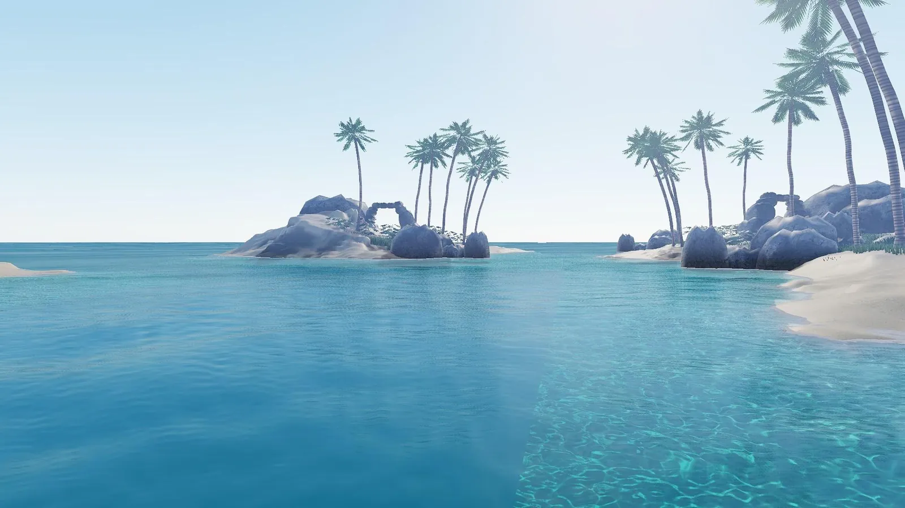
MAIN WORK目標：沖縄の海を自作ゲームエンジンで実装
水面にふれると波紋が広がります
MAIN WORK
カードを押すと 1 枚ずつめくれます
WORKS
2024〜2026年に、個人／チームで作った 13 作品
 CoreEngine（自作エンジン）
沖縄の海を自作ゲームエンジンで。PBR・FFT 海面・物理ベースの水の色・DXR の屈折・大気散乱・ボリュメトリック雲
見た
CoreEngine（自作エンジン）
沖縄の海を自作ゲームエンジンで。PBR・FFT 海面・物理ベースの水の色・DXR の屈折・大気散乱・ボリュメトリック雲
見た
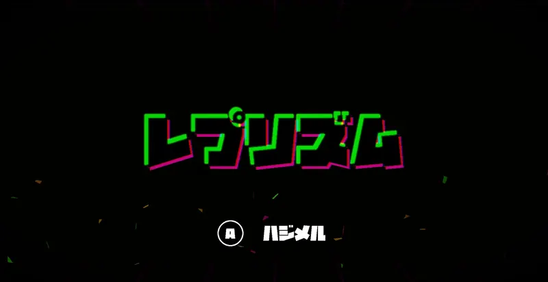
レプリズム 自作エンジンで作った初めての完全 2D ゲーム 見た バックラッシュ
見た
バックラッシュ
見た
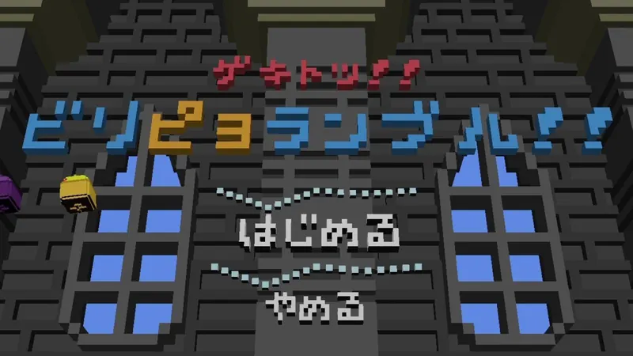
ゲキトツ！ビリぴよランブル 回転しながら敵にゲキトツする、UI も含めて全部ボクセルのアクション 見た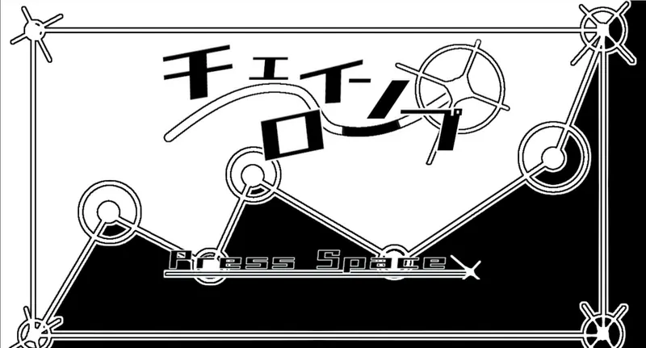
チェインロープ アンカーポイントを目掛けてチェーンを伸ばし、ゴールを目指す 見た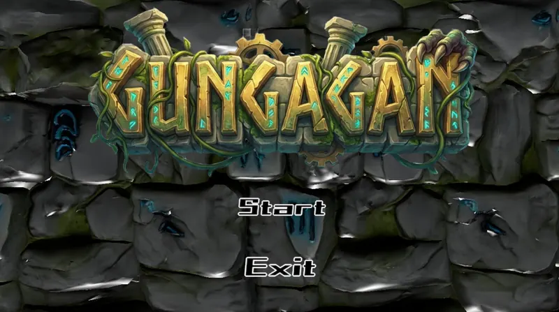
GUNGAGAN 見た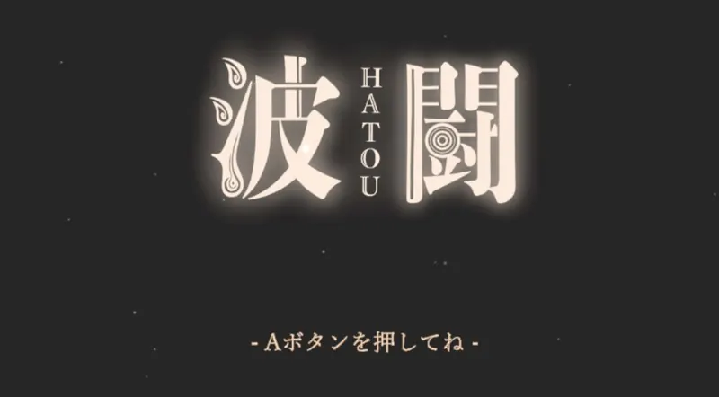
波闘 見た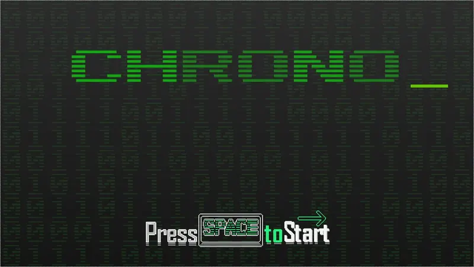
CHRONO_ 時間を止めて敵をクリックし、沢山連鎖させてスコアを稼ぐ 見た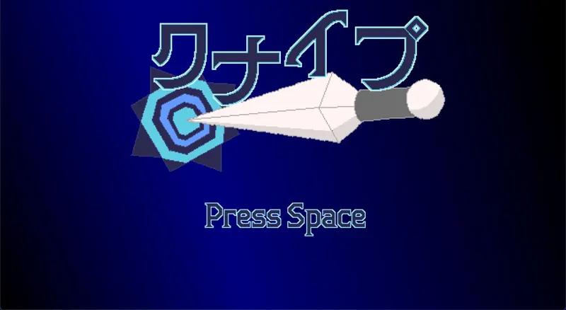
クナイブ 見た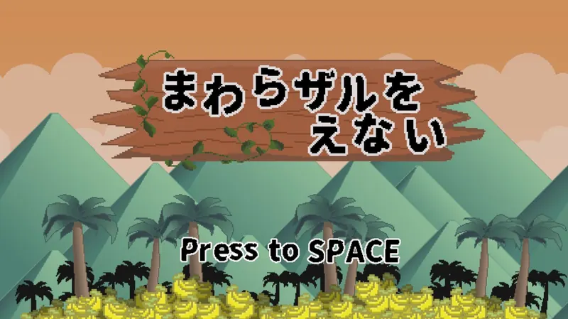
まわらザルをえない 回転するサルを操作し、タイミング良くポールをジャンプしてゴールを目指す 見た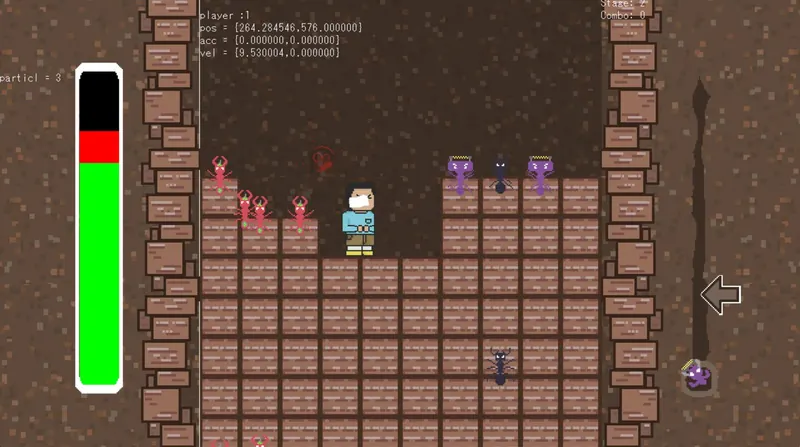
（作品名） 見た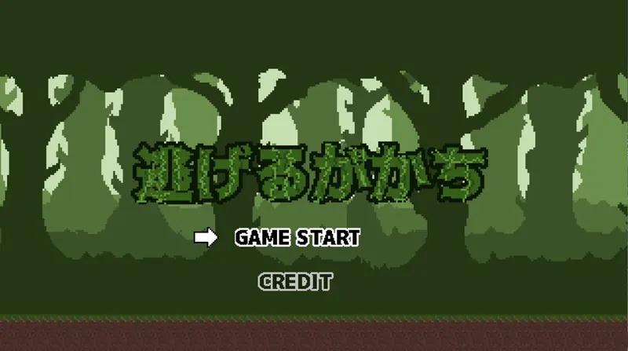
逃げるかかち 見た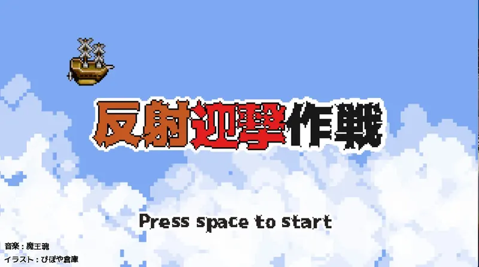
反射迎撃作戦 見たABOUT
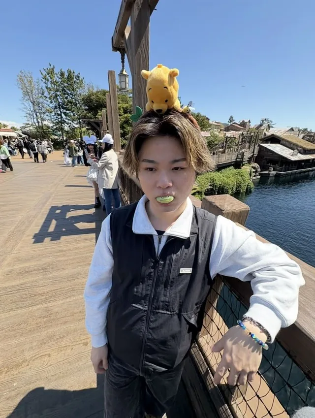
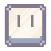
Aseprite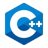
C++ACHIEVEMENTS
海にふれる・潜る・作品を見る。サイトのあちこちに実績があります
解除率
0 / 14 解除